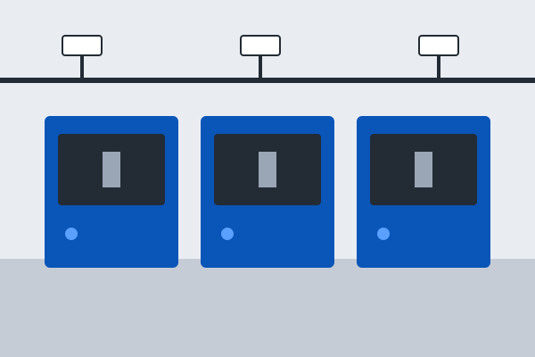
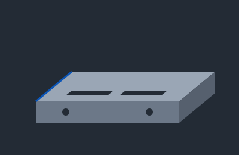
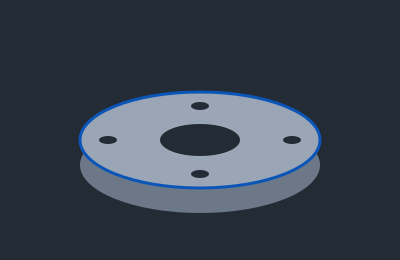

Rajkot's precision milling shop — we specialise in VMC milling of high-tolerance components and industrial tooling, machined to drawing.
Request a Quote Our Milling Services

Established in 2017 in Rajkot, AP Engineering is a precision VMC milling job-work house serving manufacturers who need repeatable, dimensionally stable parts. From single prototypes to high-volume runs, we hold tight tolerances on every milled batch.
Our shop floor is anchored in the Rajkot industrial belt, giving us fast turnaround and direct access to regional supply chains.
Read MoreSingle-source VMC milling from raw material to finished, inspected components.

Flat faces, shoulders and steps machined true, flat and parallel to size.
Complex 2D and 3D profiles cut to drawing on modern vertical machining centres.

Pockets, slots, keyways and cavities machined with accurate depth control.
A purpose-built facility with modern VMC centres, precision measuring instruments and skilled operators for consistent, on-time results.
Modern vertical machining centres
In-process inspection & measuring instruments
Production support for urgent jobs
Jobs inspected before dispatch
Send us your drawings and specifications. Our team responds within one business day.
Contact Us